|
3DCamera
|
3D相机SDK为3D相机设备的软件开发包，开发包中包含了3D相机中深度流及RGB流的控制接口，及数据获取接口。
本文档为了更好的帮助客户理解和使用3DCameraSDK，基于不同的使用场景的，对3DCamera的接口调用进行详细说明。
3D相机：可以获取物体三维点云和RGB颜色的相机，参见图 1。
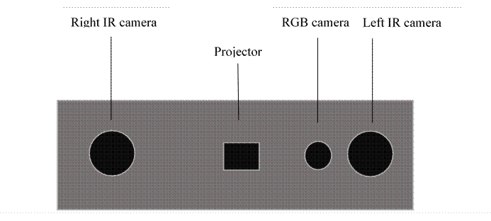
图 1 3D相机硬件示意图
SDK：软件开发工具包(Software Development Kit)
API：SDK接口函数
深度：测量点到相机坐标系XY平面的距离
红外：红外线
点云: 物体表面采样点的集合，每个点拥有在相机坐标系下的XYZ坐标
软触发Soft trigger：相机工作在待机模式，当软件触发（按钮点击、执行脚本或者调用软件接口）后实现拍照或者其它功能的行为
外触发 External trigger：相机响应外部输入触发信号进行采图，以实现和其他设备同步。
HDR：（High Dynamic Range）高动态范围。
深度流：3D相机采集到的深度值数据流
RGB流：RGB彩色相机采集到的数据流
操作系统要求 ： ≥Ubuntu18.04，kernel版本≥4.15
Windows8/Windows10
SDK开发语言 ：C++
Visual Studio版本 ：2013及以上
4 SDK介绍
SDK将3D相机分为深度流(Depth Stream)及RGB流(RGB Stream)，如图 2所示。两个流工作时互不干扰。
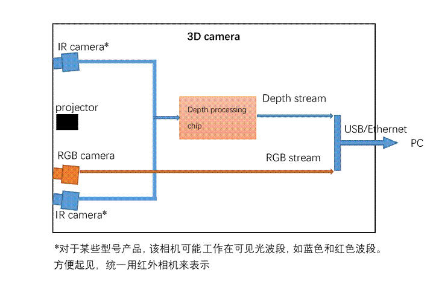
图 2 3D相机数据流
在3D相机工作过程中，需要对两个流进行独立参数配置，如设置流的增益、曝光时间等。
深度流(Depth Stream)支持的格式：
1）STREAM_FORMAT_PAIR：左右相机红外图像输出格式，1byte~width*height byte为左相机红外图像，(width*height+1) byte~ 2*width*height byte为右相机红外图像；
2）STREAM_FORMAT_Z16：16bit深度图像输出格式，图像上每点深度信息用16bit无符号整形表示，深度值*Scale得到毫米单位的距离，Scale可从设备属性中获取；
3）STREAM_FORMAT_Z16Y8Y8：16bit深度图像+左右相机红外图像输出格式，1byte~2*width*height byte为深度图像，(2*width*height+1) byte~ 3*width*height byte为左相机红外图像，(3*width*height+1) byte~ 4*width*height byte为右相机红外图像。
RGB Stream支持的格式：(部分型号无RGB相机，因此不支持RGB流)
1）STREAM_FORMAT_MJPG：RGB相机MJPG图像输出格式。
5 SDK工程环境及配置
SDK目录结构如下图所示其中：
├── bin
├── build
├── CMakeLists.txt
├── doc
├── inc
├── lib
│ ├── linux
│ └── windows
└── src
├── SampleHandEye
├── SampleHDR
├ …
└── SampleSystemQueryCameras
1） bin目录为最终Linux/Windows生成的可执行测试程序路径；
2） build目录为Linux工程编译目录，或者Windows工程目录；
3） inc目录为SDK头文件目录；
4） lib目录为Linux/WindowsSDK库路径；
5） src目录为测试Sample源码目录。
SDK基于CMake构建，因此在Linux平台运行时是必须先安装CMake，版本必须高于2.8。
SDK需要依赖libusb库，因此必须安装libusb-1.0库。
1） sudo apt-get install libusb-1.0
2） cd Sample/build
3） cmake ../
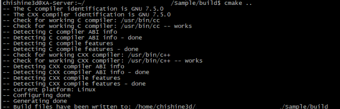
4） make
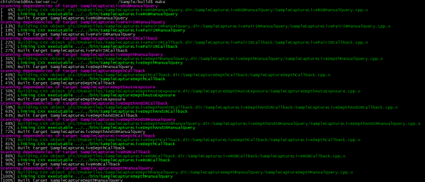
生成的SDK Sample程序位于Sample/bin目录。
SDK Sample默认不包含手眼标定模块，如需使用，需在cmake时执行：
cmake -DWITH_HANDEYE=on ../
注意：
运行Sample程序时必须使用root权限。例如：sudo ./SamplePointResconstruction
5.2 ARM Linux SDK工程环境及配置
SDK基于CMake构建，因此在Linux平台运行时是必须先安装CMake，版本必须高于2.8。
SDK需要依赖libusb库，因此必须安装libusb-1.0库。
1） sudo apt-get install libusb-1.0
2） cd Sample/build
3） source ../env/env_linux_arm.sh
4） cmake ../
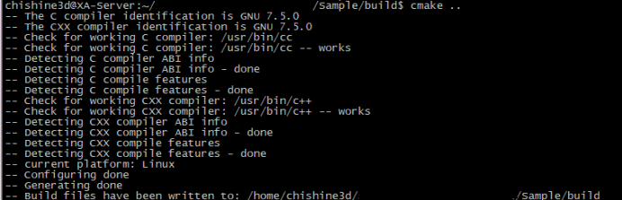
5） make
生成的SDK Sample程序位于Sample/bin目录。
SDK Sample默认不包含手眼标定模块，如需使用，需在cmake时执行：
cmake -DWITH_HANDEYE=on ../
注意：
运行Sample程序时必须使用root权限。例如：sudo ./SamplePointResconstruction
5.3 ARM64 Linux SDK工程环境及配置
SDK基于CMake构建，因此在Linux平台运行时是必须先安装CMake，版本必须高于2.8。
SDK需要依赖libusb库，因此必须安装libusb-1.0库。
1） sudo apt-get install libusb-1.0
2） cd Sample/build
3） source ../env/env_linux_aarch64.sh
4） cmake ../
5） make
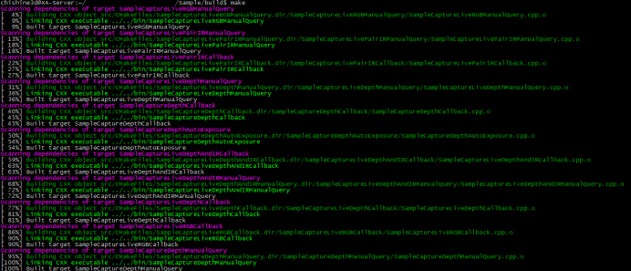
生成的SDK Sample程序位于Sample/bin目录。
SDK Sample默认不包含手眼标定模块，如需使用，需在cmake时执行：
cmake -DWITH_HANDEYE=on ../
注意：
运行Sample程序时必须使用root权限。例如：sudo ./SamplePointResconstruction
WindowsSDK需通过Cmake构建Visual Studio工程。
1) 打开CMake，选择sdk 源码目录及生成解决方案目录
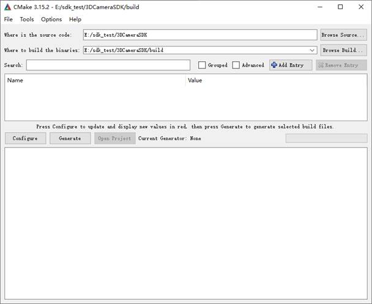
2) 单击Configure进行Visual Studio工程配置，例如Visual Studion2013, 64位操作系统
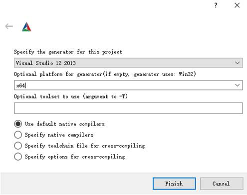
3) 等待配置完成，如有需要，勾选手眼标定模块（WITH_HANDEYE），单击Generate生成对应的Visual Studio解决方案
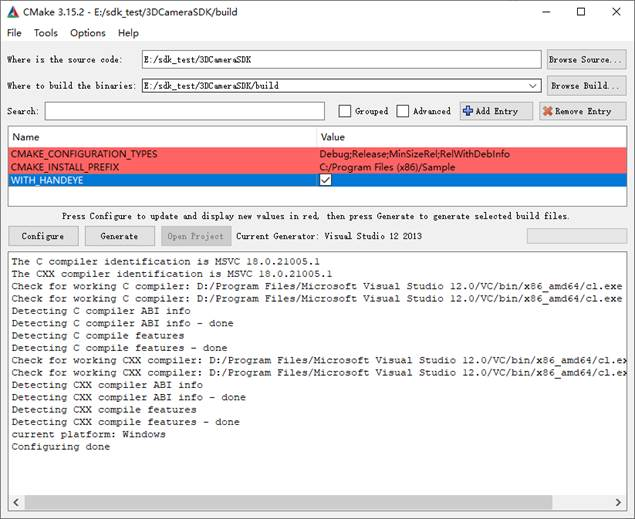
4) 生成解决方案后，可在Cmake页面中直接单击Open Project，打开Visual Studio工程，也可以在生成的目录选择Sample.sln打开。
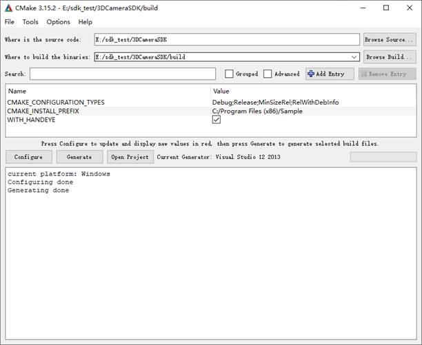
5) SDK工程项目入下图所示
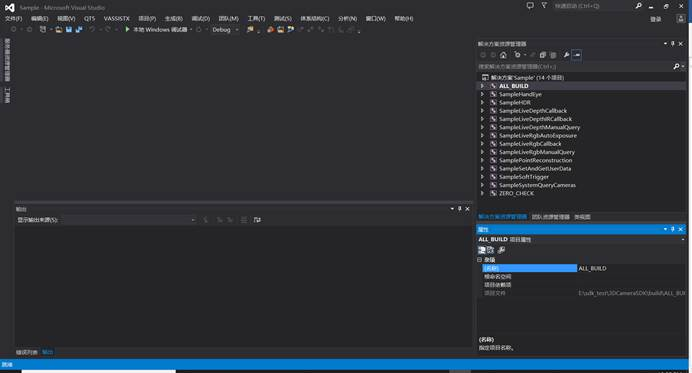
1.8.10